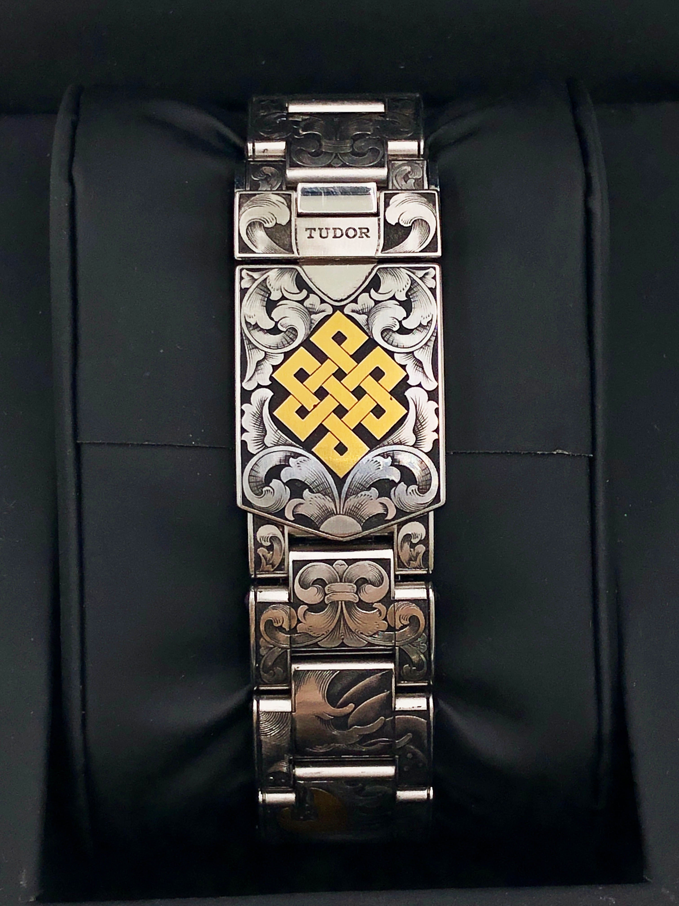
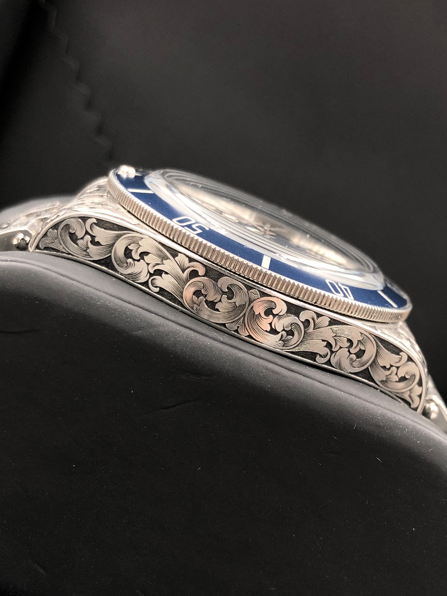
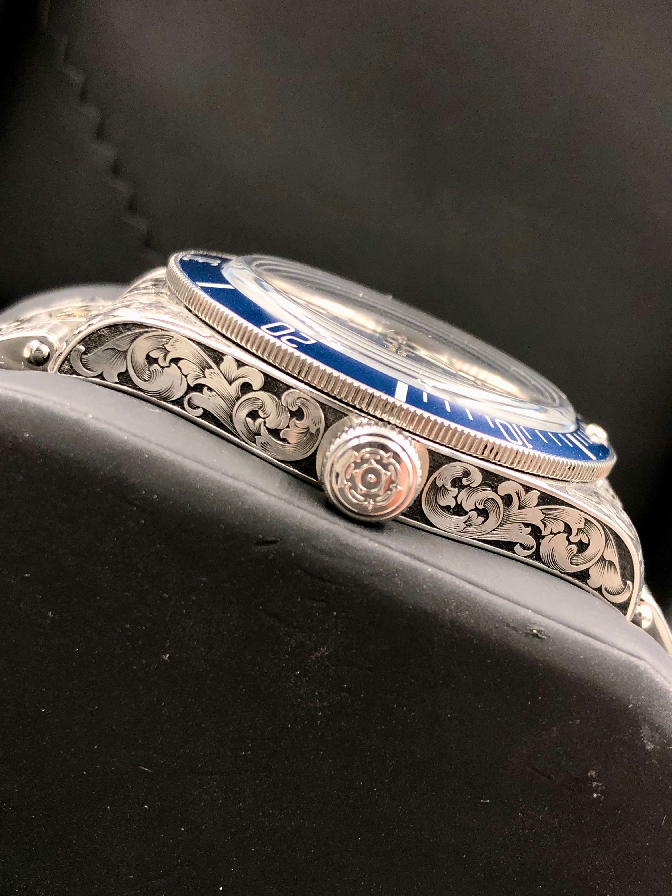

Selected work · 01
TUDOR Black Bay 58

The project
Leaping Carp
Several years ago, the client commemorated an important chapter of his life with a koi tattoo. As he entered a new stage in life, he wanted to reinterpret this meaningful symbol—not by replicating the tattoo itself, but by transforming it into an original hand-engraved work of art. In doing so, the memories and values it represents could continue to accompany him in a new form for years to come. The design is centered around the koi, complemented by cherry blossoms and an eternal knot, creating a composition that tells the client's personal story. Selective gold inlays are carefully applied to details such as the fins and cherry blossoms, adding depth, contrast, and visual focus while preserving the harmony of the overall composition. The subtle touches of gold enhance the richness of the engraving, allowing different details to emerge as the watch catches the light.





Details
- Watch
- Tudor two-tone
- Technique
- Traditional hand engraving and gold inlay
- Composition
- Koi, floral ornament, waves and scrollwork
- Studio
- Mr. Nine Engraving · Taiwan